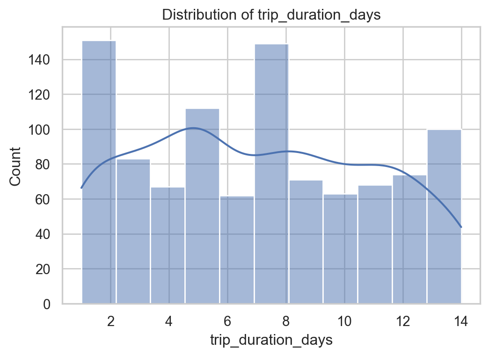
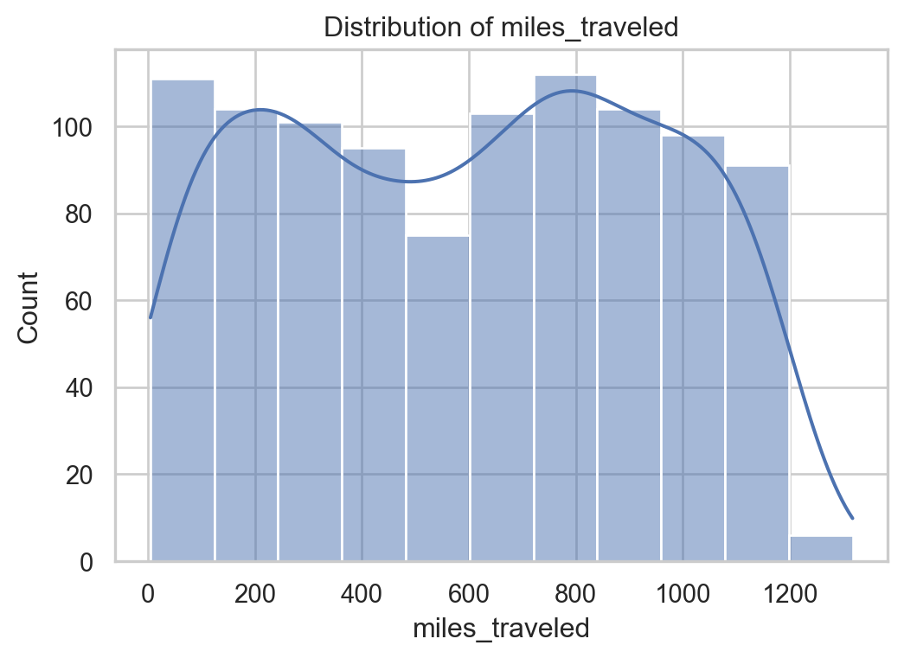
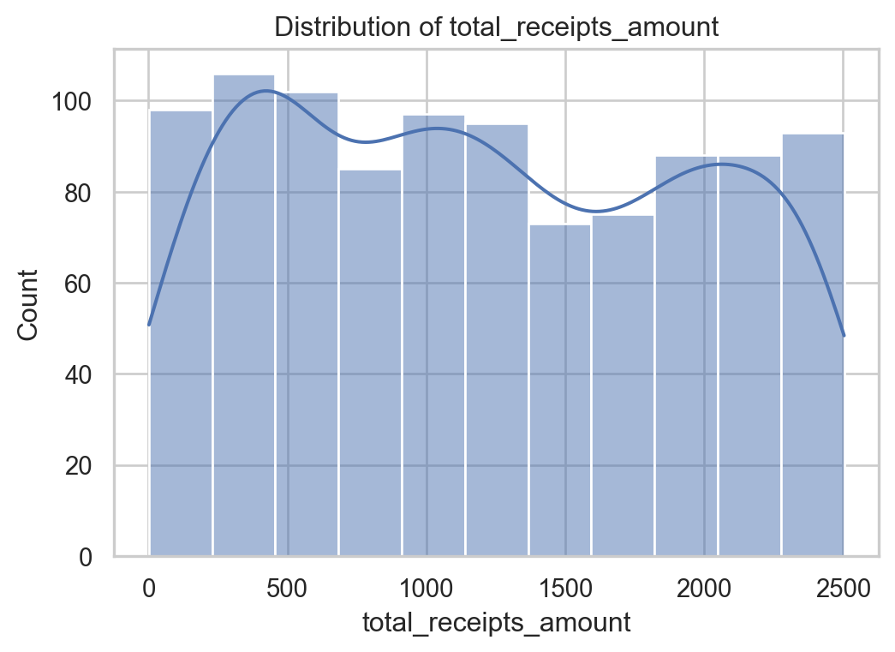
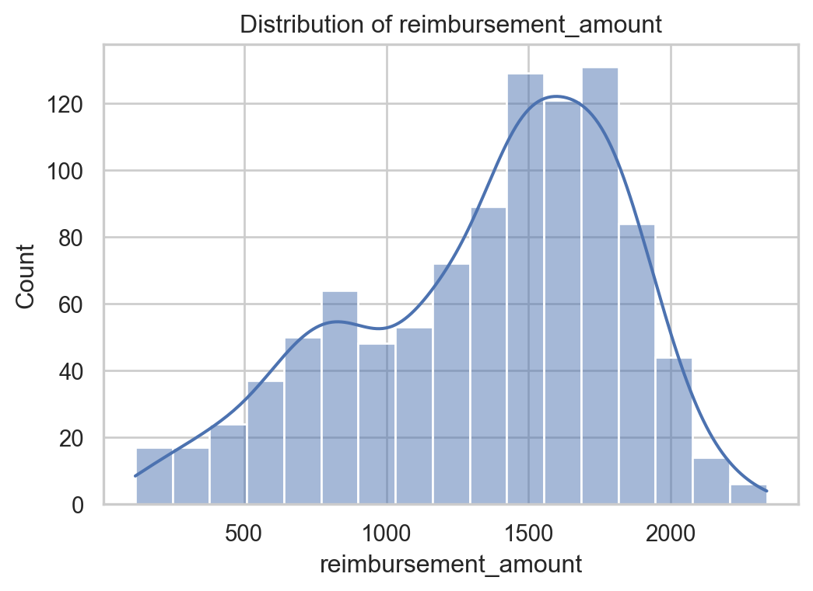
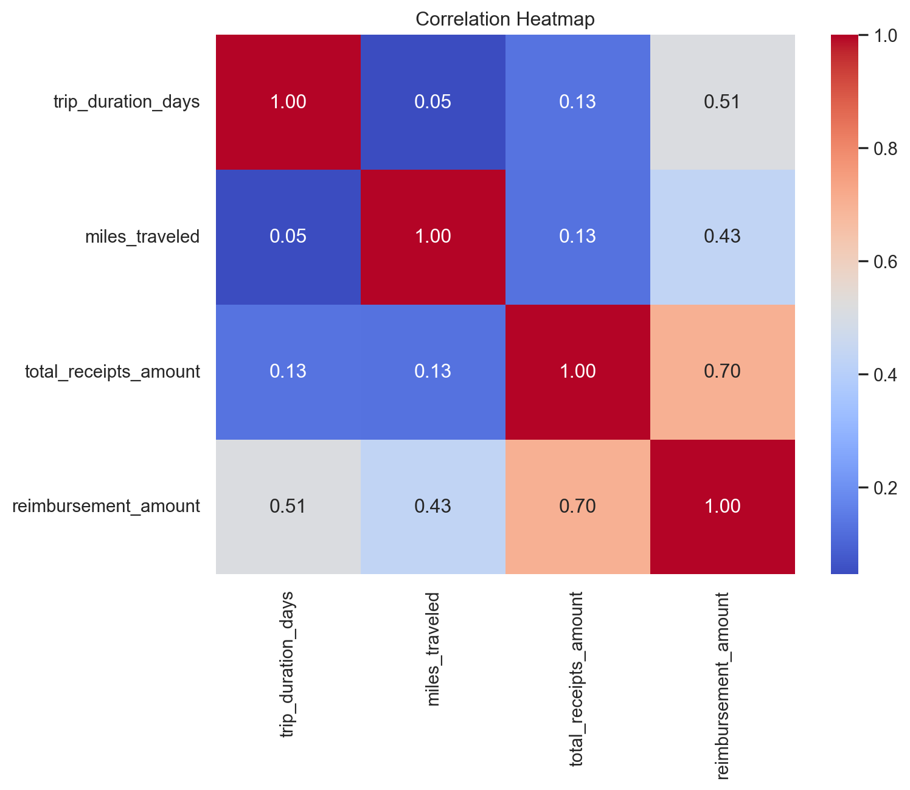
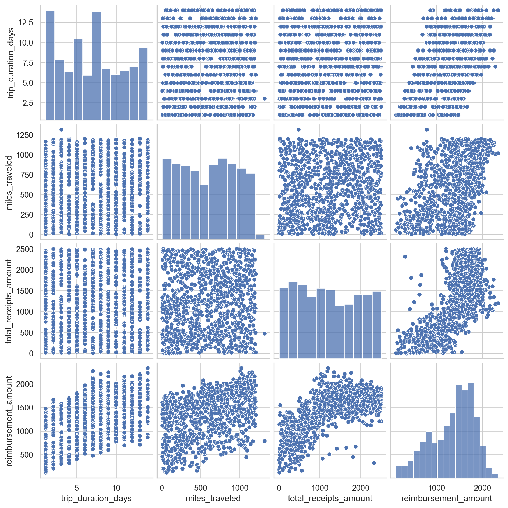
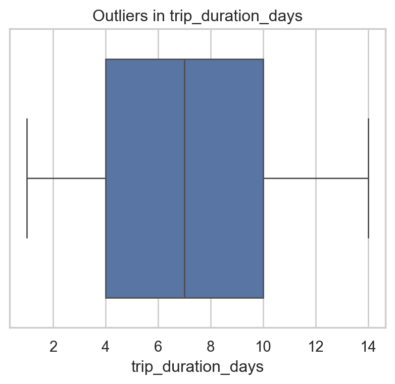
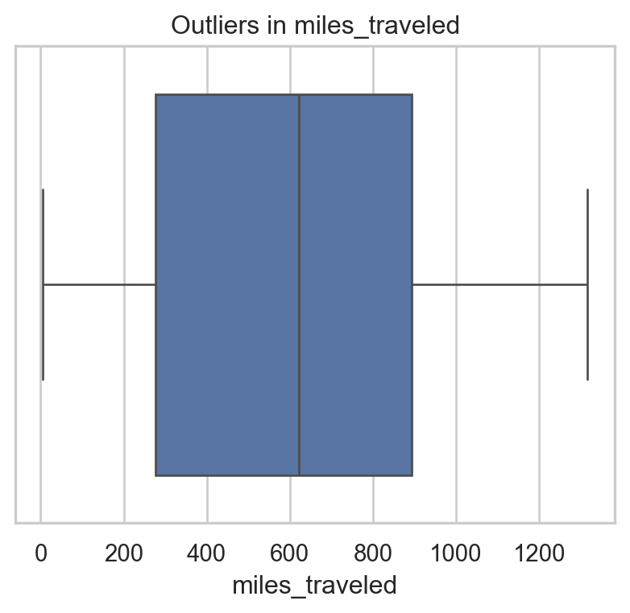
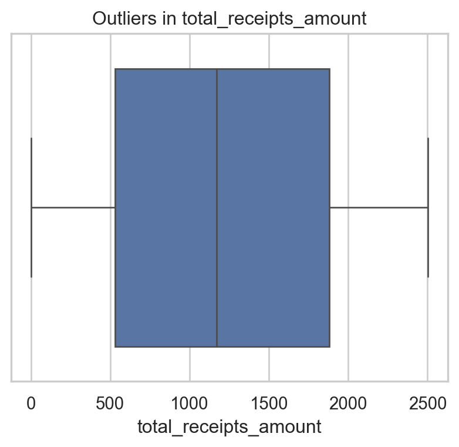
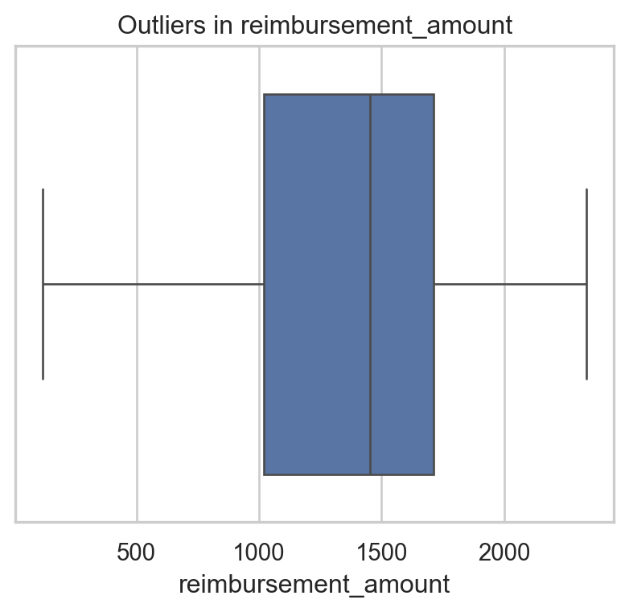

# Basic imports for data manipulation and visualization.
import pandas as pd
import numpy as np
import matplotlib.pyplot as plt
import seaborn as sns
# Display settings so that tables and plots are easier to read.
pd.set_option('display.max_columns', None)
sns.set(style="whitegrid")Exploratory Data Analysis (EDA)
1 Introduction:
The goal of this exploratory data analysis is to understand the historical reimbursement patterns in ACME Corporation’s legacy system.
We will summarize and visualize the data to identify trends, relationships, and potential business rules that influence the reimbursement amount.
2 Basic set up
import json
# Load JSON dataset
with open("../data/public_cases.json", "r") as f:
data = json.load(f)
df = pd.DataFrame(data)
df.head()| input | expected_output | |
|---|---|---|
| 0 | {'trip_duration_days': 3, 'miles_traveled': 93... | 364.51 |
| 1 | {'trip_duration_days': 1, 'miles_traveled': 55... | 126.06 |
| 2 | {'trip_duration_days': 1, 'miles_traveled': 47... | 128.91 |
| 3 | {'trip_duration_days': 2, 'miles_traveled': 13... | 203.52 |
| 4 | {'trip_duration_days': 3, 'miles_traveled': 88... | 380.37 |
df.info()
df.describe()
df.isnull().sum()<class 'pandas.core.frame.DataFrame'>
RangeIndex: 1000 entries, 0 to 999
Data columns (total 2 columns):
# Column Non-Null Count Dtype
--- ------ -------------- -----
0 input 1000 non-null object
1 expected_output 1000 non-null float64
dtypes: float64(1), object(1)
memory usage: 15.8+ KBinput 0
expected_output 0
dtype: int643 Normalize JSON structure
features = pd.json_normalize(df['input'])
features['reimbursement_amount'] = df['expected_output']
features.head()
features.info()<class 'pandas.core.frame.DataFrame'>
RangeIndex: 1000 entries, 0 to 999
Data columns (total 4 columns):
# Column Non-Null Count Dtype
--- ------ -------------- -----
0 trip_duration_days 1000 non-null int64
1 miles_traveled 1000 non-null float64
2 total_receipts_amount 1000 non-null float64
3 reimbursement_amount 1000 non-null float64
dtypes: float64(3), int64(1)
memory usage: 31.4 KB4 Histogram
num_cols = ['trip_duration_days', 'miles_traveled',
'total_receipts_amount', 'reimbursement_amount']
for col in num_cols:
plt.figure(figsize=(6,4))
sns.histplot(features[col], kde=True)
plt.title(f"Distribution of {col}")
plt.show()



Histogram of trip_duration_days
The distribution of trip_duration_days is right-skewed, indicating that most business trips are short (3–7 days). A smaller portion of trips extends to 10–14 days, which may represent special assignments or long-distance travel
Histogram of miles_traveled
Miles_traveled shows a wide spread with several long-distance trips. The distribution suggests two patterns: a large number of mid-range trips (300–800 miles) and several extreme long-distance cases (>1000 miles), which could indicate special travel requirements or multi-leg trips.
Histogram of total_receipts_amount
The total_receipts_amount distribution is fairly uniform with a slight right-skew, showing that most employees incur moderate expenses. Higher receipt amounts (>2000) may reflect extended trips or multiple reimbursement categories
Histogram of reimbursement_amount
Reimbursement_amount is right-skewed with a concentration between 1200–1800. Higher reimbursements are less frequent but appear consistently, suggesting they may correspond to longer trips or greater miles traveled.
5 Correlation Heatmap
plt.figure(figsize=(8,6))
sns.heatmap(features.corr(), annot=True, cmap="coolwarm", fmt=".2f")
plt.title("Correlation Heatmap")
plt.show()
The heatmap shows that reimbursement_amount is most strongly correlated with:
- total_receipts_amount (0.70) -> receipts drive reimbursement calculations.
- miles_traveled (0.43) -> longer distances contribute significantly.
- trip_duration_days (0.51) -> longer trips increase reimbursement but at a moderate rate.
This indicates the reimbursement formula likely depends on both mileage and receipt totals.
6 Pairplot
sns.pairplot(features[num_cols])
plt.show()
The pairplot reveals: A visible positive relationship between total_receipts_amount and reimbursement_amount. A moderate upward trend between trip_duration_days and reimbursement_amount. High variance in miles_traveled, confirming diverse travel distances. No strong nonlinear patterns or clusters are present, suggesting the dataset is fairly continuous.
7 Boxplots (Outlier Analysis)
for col in num_cols:
plt.figure(figsize=(5,4))
sns.boxplot(x=features[col])
plt.title(f"Outliers in {col}")
plt.show()



Outliers in trip_duration_days: a few trips extend to the maximum of 14 days, indicating possible special corporate assignments. Outliers in miles_traveled: long-distance outliers (>1200 miles) are present, likely representing air travel or multi-state trips. Outliers in total_receipts_amount: high-receipt outliers (>2000) suggest multi-category expenses or longer durations. Outliers in reimbursement_amount: reimbursement outliers match the receipt and mileage outliers, confirming consistency in the reimbursement rules.
df.columnsIndex(['input', 'expected_output'], dtype='object')8 Summary of Findings
Overall, this exploratory analysis suggests that:
The dataset is structurally sound and free of missing values in the key fields.
Most business trips are relatively short in duration, but miles traveled and receipts vary over a wide range.
Reimbursement amount is driven mainly by total receipts, with miles traveled providing an additional, secondary influence.
Trip duration has a weaker direct relationship with reimbursement, which hints that ACME’s policy is more cost-based than time-based.
Outliers in distance, receipts, and reimbursement appear to reflect legitimate high-cost or long-distance trips rather than data quality problems.
These patterns provide a clear basis for the next step: building and evaluating predictive models that estimate reimbursement amounts from trip characteristics.